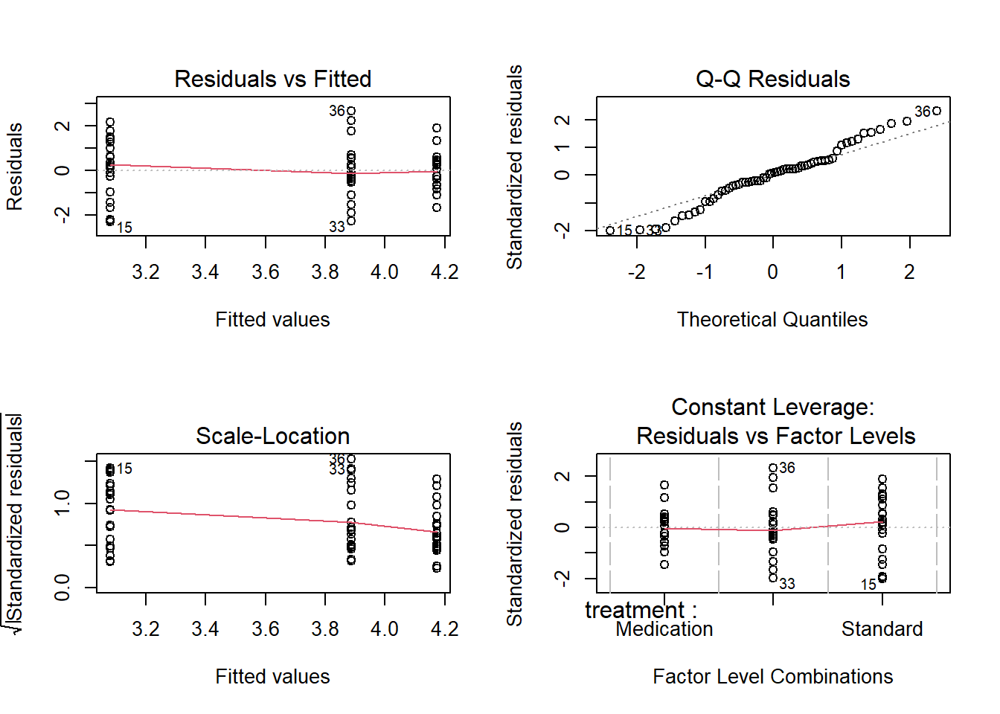
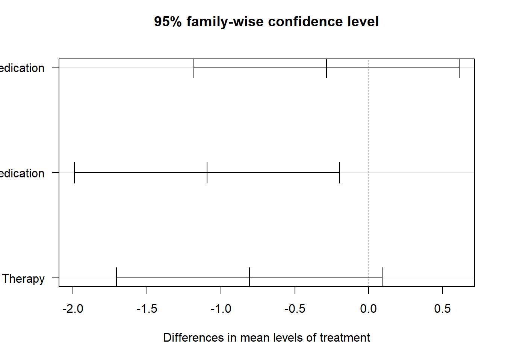

# Example boxplot in R
data <- data.frame(
group = rep(c("Placebo", "Behavioral", "Drug"), each = 10),
stress = c(rnorm(10, 5, 1), rnorm(10, 7, 1), rnorm(10, 6, 1))
)
# Basic boxplot
boxplot(stress ~ group,
data = data,
main = "Boxplot of Stress Scores",
xlab = "Group",
ylab = "Stress Score",
col = c("lightblue", "lightgreen", "lightcoral"))
# Add individual points
stripchart(stress ~ group,
data = data,
vertical = TRUE,
method = "jitter",
add = TRUE,
pch = 19,
col = "darkgray")Introduction to ANOVA
Understanding Hypothesis Testing and ANOVA
Constructing a Written and Mathematical Hypothesis
When constructing a hypothesis for ANOVA, it’s important to formulate it both in a written and mathematical format.
- Written Hypothesis (Example 1):
- Null Hypothesis (H₀): The average stress in cardiac patients is not different between a placebo group and a behavioral intervention group.
- Alternative Hypothesis (H₁): The average stress in cardiac patients differs between the placebo and behavioral intervention groups.
- Mathematical Hypothesis (Example 1): \[ H_{0}: \mu_{placebo} = \mu_{behavior}\]
\[H_{1}: \mu_{placebo} \neq \mu_{behavior}\]
💡 R Tip: In R, we test these hypotheses using the
aov()function (analysis of variance). The formula notationoutcome ~ groupmeans “outcome explained by group”.
T-test vs. ANOVA
When comparing means between two groups, the t-test and ANOVA will yield the same results. However, ANOVA extends to cases with more than two groups.
💡 R Tip: For two groups, you can use either
t.test()oraov()in R. For three or more groups, you must use ANOVA.
Writing ANOVA Hypothesis, Type 1 and 2 Errors
In ANOVA, the hypotheses are:
- Null Hypothesis (H₀): All group means are equal.
- Alternative Hypothesis (H₁): At least one group mean is different.
Type 1 Error: Rejecting the null hypothesis when it is true (false positive).
Type 2 Error: Failing to reject the null hypothesis when it is false (false negative).
Assumptions of ANOVA
- The dependent variable is measured on an interval or ratio scale.
- The independent variable is categorical.
- Random sampling.
- Normal distribution of the dependent variable.
- Homogeneity of variance.
💡 R Tip: You can check ANOVA assumptions in R (for more detail on assumption checking, see the Preliminaries lecture): - Normality:
shapiro.test()on residuals or Q-Q plot - Homogeneity of variance:leveneTest()from the car package - Visual checks: Residual plots usingplot(model)
Visualizing Using Boxplots
Boxplots are essential for visualizing data distribution across groups in ANOVA.
💡 R Tip: The formula
stress ~ groupmeans “stress by group”. The~symbol separates the dependent variable (left) from the independent variable (right).
Calculating Variation and Degrees of Freedom
- Sum of Squares Between (SSB): Variation between groups.
- Sum of Squares Within (SSW): Variation within groups.
- Total Sum of Squares (SST): Total variation.
- Degrees of Freedom:
- \[df_{between} = k - 1\] (where k is the number of groups)
- \[df_{within} = N - k\] (where N is the total sample size)
The F Statistic and P-Value
The F statistic is calculated using the ratio of mean squares:
\[ F = \frac{MSB}{MSW} \]
- MSB: Mean Square Between
- MSW: Mean Square Within
The p-value is derived from the F distribution, given the degrees of freedom.
The F-distribution is a continuous probability distribution that arises frequently as the null distribution of test statistics, particularly in analysis of variance (ANOVA). It is characterized by two parameters: the degrees of freedom of the numerator (df_between) and the degrees of freedom of the denominator (df_within).
Conducting ANOVA in R
Basic ANOVA
# Fit ANOVA model
model <- aov(stress ~ group, data = data)
# View results
summary(model)
# The output shows:
# - Df: Degrees of freedom
# - Sum Sq: Sum of squares
# - Mean Sq: Mean squares
# - F value: F statistic
# - Pr(>F): P-value💡 R Tip: The
summary()function on anaovobject gives you the ANOVA table. Look for thePr(>F)column for the p-value.
Extracting Specific Values
# Extract F-statistic
f_stat <- summary(model)[[1]]$`F value`[1]
# Extract p-value
p_value <- summary(model)[[1]]$`Pr(>F)`[1]
# Print results
cat("F-statistic:", f_stat, "\n")
cat("P-value:", p_value, "\n")Checking Assumptions
# Check normality of residuals
shapiro.test(residuals(model))
# Q-Q plot for normality
qqnorm(residuals(model))
qqline(residuals(model), col = "red")
# Check homogeneity of variance (requires car package)
library(car)
leveneTest(stress ~ group, data = data)
# Diagnostic plots
par(mfrow = c(2, 2))
plot(model)
par(mfrow = c(1, 1))Post-hoc Analysis
Post-hoc analysis is essential in ANOVA to identify specific group differences following the detection of a significant F-statistic. This analysis involves comparing all possible pairs of group means to determine which differences are statistically significant.
The Problem of Multiple Comparisons
When we conduct multiple statistical tests simultaneously, the probability of making at least one Type I error (a false positive) increases. This is known as Alpha Inflation or the Family-Wise Error Rate (FWER).
If you conduct one test at \(\alpha = 0.05\), there is a 5% chance of a false positive. However, if you compare 3 groups, you have 3 possible pairwise comparisons. The probability of making at least one error is: \[1 - (1 - 0.05)^3 \approx 0.14 \text{ or 14%}\]
To protect against this, we must use one of two strategies:
- Adjust the Alpha (\(\alpha\)): Lower the threshold for significance for each individual test (e.g., the Bonferroni method uses \(\alpha / \text{number of tests}\)).
- Adjust the P-values: Keep the \(\alpha\) at 0.05 but “penalize” the p-values by making them larger based on the number of comparisons.
Tukey HSD vs Bonferroni
Tukey’s Honestly Significant Difference (HSD) test and the Bonferroni correction are both methods used to manage these multiple comparisons.
- Tukey’s HSD: Specifically designed for pairwise comparisons of all group means. It adjusts the p-values and confidence intervals to maintain the family-wise error rate at exactly 0.05.
- Bonferroni Correction: The most conservative method. It simply divides your overall alpha (0.05) by the number of comparisons. For 3 comparisons, you would only call a result significant if \(p < 0.0167\).
Tukey HSD in R
# Tukey HSD post-hoc test
tukey_result <- TukeyHSD(model)
print(tukey_result)
# Plot the results
plot(tukey_result)
# The output shows:
# - diff: Difference in means
# - lwr, upr: 95% confidence interval
# - p adj: Adjusted p-value💡 R Tip: If the confidence interval for a pairwise comparison does not include 0, the difference is statistically significant at the 0.05 level.
Pairwise t-tests with Bonferroni Correction
# Pairwise t-tests with Bonferroni adjustment
pairwise.t.test(data$stress, data$group, p.adjust.method = "bonferroni")Comprehensive Example: Complete ANOVA Workflow
Let’s work through a complete ANOVA analysis from start to finish:
# ============================================
# Complete ANOVA Example
# Research Question: Does treatment type affect pain reduction?
# ============================================
# Step 1: Load required packages
library(car) # For Levene's testWarning: package 'car' was built under R version 4.5.2Loading required package: carDataWarning: package 'carData' was built under R version 4.5.2# Step 2: Create or read data
set.seed(456)
pain_data <- data.frame(
patient_id = 1:60,
treatment = rep(c("Standard", "Physical Therapy", "Medication"), each = 20),
pain_reduction = c(
rnorm(20, mean = 2.5, sd = 1.2), # Standard
rnorm(20, mean = 4.2, sd = 1.3), # Physical Therapy
rnorm(20, mean = 3.8, sd = 1.1) # Medication
)
)
# Convert treatment to factor
pain_data$treatment <- factor(pain_data$treatment)
# Step 3: Explore the data
cat("=== Data Summary ===\n")=== Data Summary ===summary(pain_data) patient_id treatment pain_reduction
Min. : 1.00 Medication :20 Min. :0.771
1st Qu.:15.75 Physical Therapy:20 1st Qu.:3.232
Median :30.50 Standard :20 Median :3.771
Mean :30.50 Mean :3.713
3rd Qu.:45.25 3rd Qu.:4.473
Max. :60.00 Max. :6.560 cat("\n=== Sample Sizes ===\n")
=== Sample Sizes ===table(pain_data$treatment)
Medication Physical Therapy Standard
20 20 20 cat("\n=== Descriptive Statistics by Group ===\n")
=== Descriptive Statistics by Group ===cat("Means:\n")Means:tapply(pain_data$pain_reduction, pain_data$treatment, mean) Medication Physical Therapy Standard
4.173282 3.887299 3.079626 cat("\nStandard Deviations:\n")
Standard Deviations:tapply(pain_data$pain_reduction, pain_data$treatment, sd) Medication Physical Therapy Standard
0.8110086 1.2574151 1.3892073 # Step 4: Visualize the data
par(mfrow = c(1, 2))
# Boxplot
boxplot(pain_reduction ~ treatment,
data = pain_data,
main = "Pain Reduction by Treatment",
xlab = "Treatment",
ylab = "Pain Reduction (points)",
col = c("lightblue", "lightgreen", "lightcoral"))
# Add points
stripchart(pain_reduction ~ treatment,
data = pain_data,
vertical = TRUE,
method = "jitter",
add = TRUE,
pch = 19,
col = "darkgray")
# Histogram of all data
hist(pain_data$pain_reduction,
main = "Distribution of Pain Reduction",
xlab = "Pain Reduction (points)",
col = "lightblue",
border = "white")par(mfrow = c(1, 1))
# Step 5: Check assumptions
cat("\n=== Assumption Checks ===\n")
=== Assumption Checks ===# Normality (overall)
cat("\nShapiro-Wilk Test for Normality:\n")
Shapiro-Wilk Test for Normality:shapiro_test <- shapiro.test(pain_data$pain_reduction)
print(shapiro_test)
Shapiro-Wilk normality test
data: pain_data$pain_reduction
W = 0.96426, p-value = 0.07616# Homogeneity of variance
cat("\nLevene's Test for Homogeneity of Variance:\n")
Levene's Test for Homogeneity of Variance:levene_test <- leveneTest(pain_reduction ~ treatment, data = pain_data)
print(levene_test)Levene's Test for Homogeneity of Variance (center = median)
Df F value Pr(>F)
group 2 2.134 0.1277
57 # Step 6: Conduct ANOVA
cat("\n=== ANOVA Results ===\n")
=== ANOVA Results ===anova_model <- aov(pain_reduction ~ treatment, data = pain_data)
anova_summary <- summary(anova_model)
print(anova_summary) Df Sum Sq Mean Sq F value Pr(>F)
treatment 2 12.87 6.434 4.63 0.0137 *
Residuals 57 79.21 1.390
---
Signif. codes: 0 '***' 0.001 '**' 0.01 '*' 0.05 '.' 0.1 ' ' 1# Extract key values
f_value <- anova_summary[[1]]$`F value`[1]
p_value <- anova_summary[[1]]$`Pr(>F)`[1]
cat("\nF-statistic:", round(f_value, 3), "\n")
F-statistic: 4.63 cat("P-value:", format.pval(p_value, digits = 3), "\n")P-value: 0.0137 # Step 7: Check model diagnostics
cat("\n=== Model Diagnostics ===\n")
=== Model Diagnostics ===par(mfrow = c(2, 2))
plot(anova_model)
par(mfrow = c(1, 1))
# Step 8: Post-hoc tests (if ANOVA is significant)
if (p_value < 0.05) {
cat("\n=== Post-hoc Analysis (Tukey HSD) ===\n")
tukey_results <- TukeyHSD(anova_model)
print(tukey_results)
# Plot Tukey results
plot(tukey_results, las = 1)
cat("\n=== Pairwise Comparisons (Bonferroni) ===\n")
pairwise_results <- pairwise.t.test(pain_data$pain_reduction,
pain_data$treatment,
p.adjust.method = "bonferroni")
print(pairwise_results)
} else {
cat("\nANOVA not significant (p >= 0.05). Post-hoc tests not needed.\n")
}
=== Post-hoc Analysis (Tukey HSD) ===
Tukey multiple comparisons of means
95% family-wise confidence level
Fit: aov(formula = pain_reduction ~ treatment, data = pain_data)
$treatment
diff lwr upr p adj
Physical Therapy-Medication -0.2859827 -1.183023 0.6110579 0.7245124
Standard-Medication -1.0936565 -1.990697 -0.1966160 0.0131634
Standard-Physical Therapy -0.8076739 -1.704714 0.0893667 0.0857513
=== Pairwise Comparisons (Bonferroni) ===
Pairwise comparisons using t tests with pooled SD
data: pain_data$pain_reduction and pain_data$treatment
Medication Physical Therapy
Physical Therapy 1.000 -
Standard 0.014 0.103
P value adjustment method: bonferroni # Step 9: Effect size (eta-squared)
ss_between <- anova_summary[[1]]$`Sum Sq`[1]
ss_total <- sum(anova_summary[[1]]$`Sum Sq`)
eta_squared <- ss_between / ss_total
cat("\n=== Effect Size ===\n")
=== Effect Size ===cat("Eta-squared:", round(eta_squared, 3), "\n")Eta-squared: 0.14 cat("Interpretation: ",
ifelse(eta_squared < 0.01, "negligible",
ifelse(eta_squared < 0.06, "small",
ifelse(eta_squared < 0.14, "medium", "large"))), "\n")Interpretation: medium # Step 10: Report results
cat("\n=== Summary for Reporting ===\n")
=== Summary for Reporting ===cat("A one-way ANOVA was conducted to compare pain reduction across three treatment groups.\n")A one-way ANOVA was conducted to compare pain reduction across three treatment groups.cat("The ANOVA was", ifelse(p_value < 0.05, "significant", "not significant"),
sprintf("F(%d, %d) = %.2f, p %s.\n",
anova_summary[[1]]$Df[1],
anova_summary[[1]]$Df[2],
f_value,
ifelse(p_value < 0.001, "< .001", paste("=", round(p_value, 3)))))The ANOVA was significant F(2, 57) = 4.63, p = 0.014.if (p_value < 0.05) {
cat("Post-hoc comparisons using Tukey HSD indicated significant differences between groups.\n")
}Post-hoc comparisons using Tukey HSD indicated significant differences between groups.cat("\n=== Analysis Complete ===\n")
=== Analysis Complete ===Key Takeaways
✅ ANOVA tests if means differ across 3+ groups
✅ Check assumptions before running ANOVA (normality, homogeneity of variance)
✅ Use aov() function in R with formula notation outcome ~ group
✅ If significant, conduct post-hoc tests to identify which groups differ
✅ Tukey HSD controls for multiple comparisons
✅ Always visualize your data with boxplots before and after analysis
✅ Report F-statistic, degrees of freedom, and p-value
💡 R Tip: Save your ANOVA model as an object (
model <- aov(...)). You can then use this object for post-hoc tests, diagnostic plots, and extracting results without re-running the analysis!